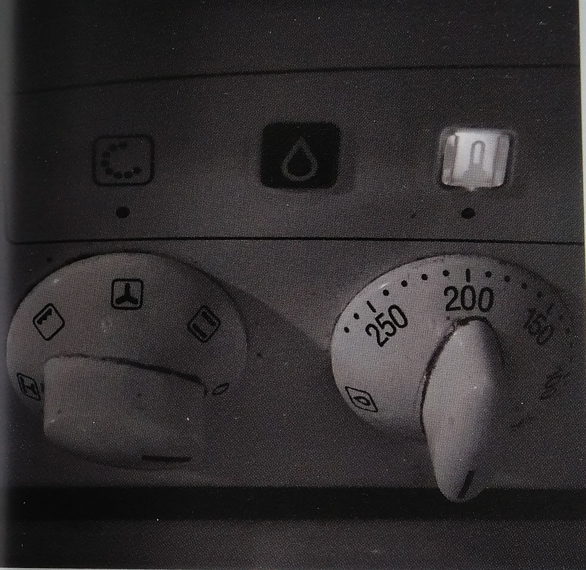

| |
Zwergenkochbuch 2020 |
About |
|---|

A car is a wheeled, self-powered motor vehicle used for transportation.
My footer information
Zutaten:
150g Quark
50g Zucker
1 Pr. Salz
6 Eßl. Milch
6 Eßl. Öl
300g Mehl
1 P. Backpulver
Die Zutaten der Reihe nach in eine Schüssel geben und zu einem glatten Teig verkneten. Dann ausrollen und belegen.
Der Belag ist nach belieben (hier ausnahmsweise KEIN Apfelmus)
Backzeit: 20-30 Minuten bei 180 Grad.

Römertopf vorher 1/2 Stunde wässern
Danach Wasser herausschütten
Hänchen gesalzen hinein
2 Stunden auf 200 Grad (Umluft oder O/U)
Zwischendurch umdrehen
Nach 1 1/4 Stunden den Deckel abnehmen und mit Paprika würzen
Restliche 3/4 Stunde so weiter backen lassen
Im Topf Butter zerlassen
1 Löffel Mehl mit einem Glas Wasser auffüllen
Salz, Schuss Essig, Zucker, Senf, 1 Teelöffel
5 Minuten kochen

Zutaten:
300g Margarine
350g Mehl
300g Zucker
1 P. Vanillinzucker
6 Eier
3 Tl. Backpulver
Die Hälfte des Teigs gibt man auf ein Backblech. Der anderen Hälfte 2 Eßl. Kakao untermischen. Dann den dunklen Teig über den hellen streichen. Darauf verteilt man 2 Gläser gut abgetropfte Sauerkirschen. Der teig muss 25-30 Minuten bei 200 Grad backen. 1/2 l Sahne schlagen und auf den erkalteten Kuchen streichen. Anschließend mit Schokoladenguß (2 Tafeln Schokolade) bedecken.